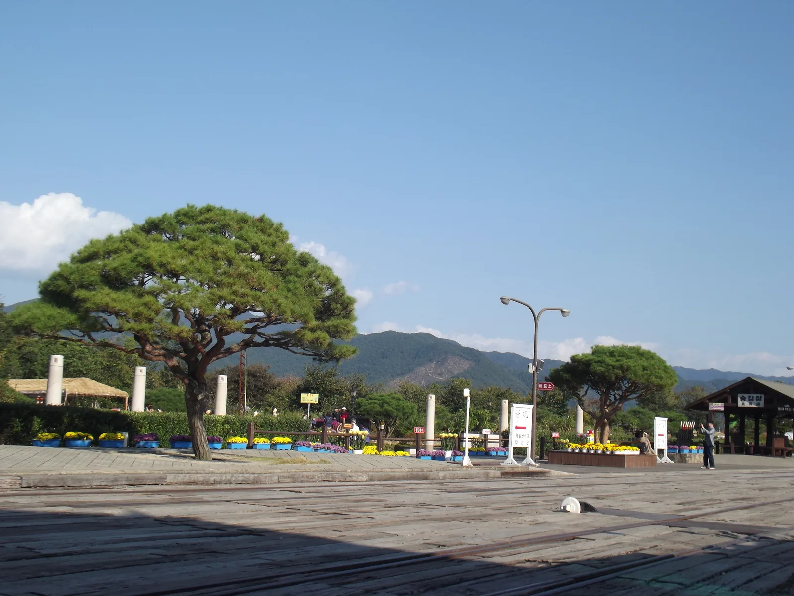
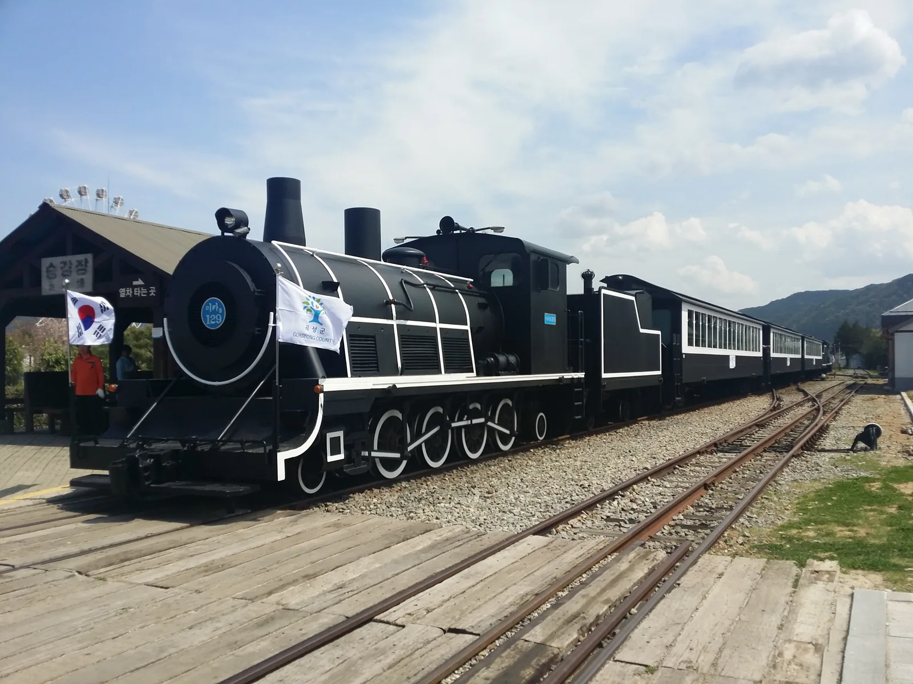
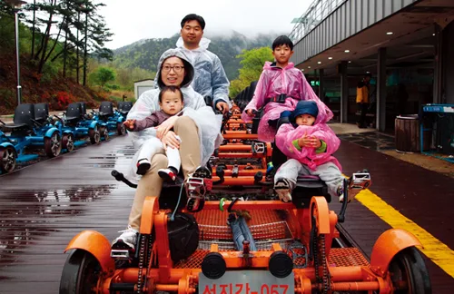
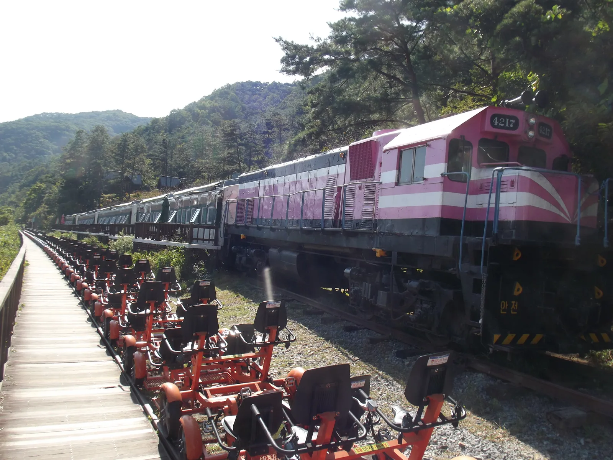
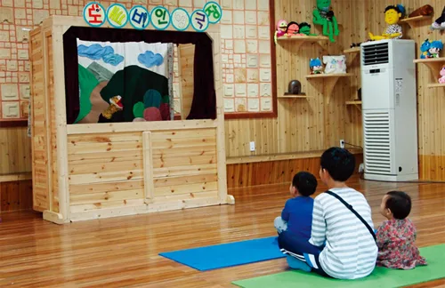
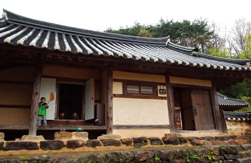
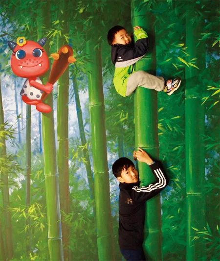
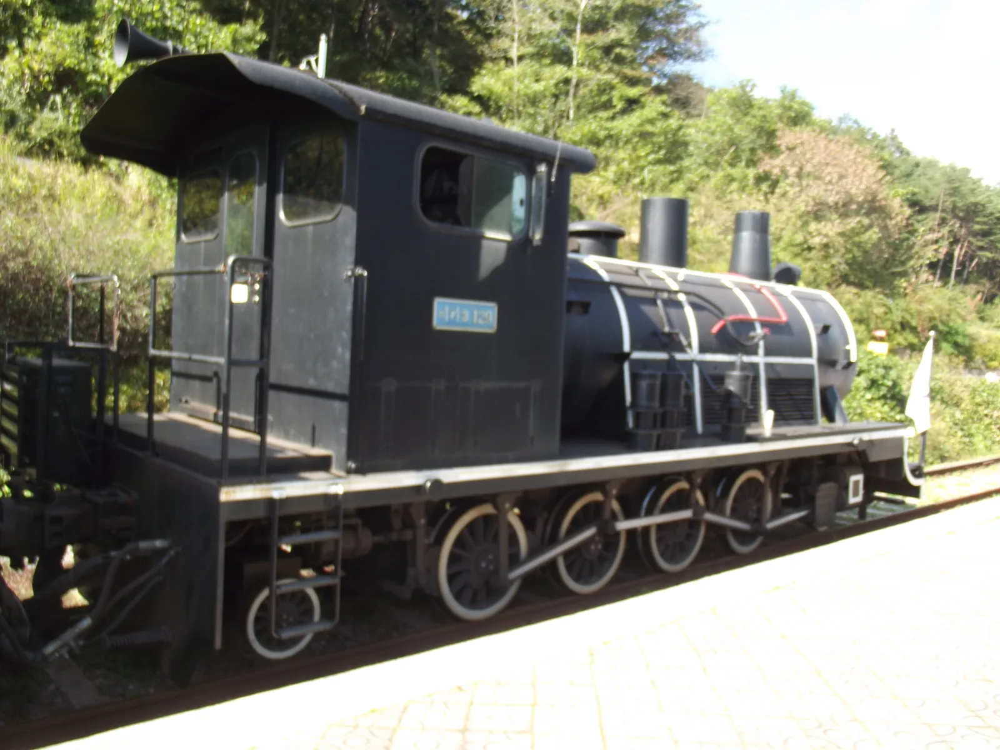

▲ 섬진강변을 따라 달리는 곡성 섬진강기차마을 증기기관차. 봄철엔 철길 옆으로 철쭉이 붉게 물든다
강원 정선에 레일바이크가 있다면, 전남 곡성에는 증기기관차와 레일바이크, 심청전설이 한 자리에 모인 섬진강기차마을이 있다. 문제는 이 셋이 요금도, 승차 방식도, 운영 주체도 전부 다르다는 점이다. 기차마을 공원 입장료를 냈다고 증기기관차나 레일바이크를 탈 수 있는 게 아니고, 레일바이크도 '기차마을 안에서 도는 것'과 '가정역에서 타는 것'이 서로 다른 상품이다. 여기에 섬진강도깨비마을과 심청이야기마을까지 묶으면 반나절 코스가 하루 코스로 늘어난다. 입장료 구조부터 증기기관차·레일바이크 시간표, 심청전설의 고향이라 불리는 이유, 주차까지 실제 동선 순서대로 정리했다.
1. 표를 세 번 사야 한다 — 기차마을 입장료부터 갈린다

▲ 섬진강기차마을 입구 광장. 이곳에서 공원 입장료를 낸 뒤에도 증기기관차·레일바이크는 별도로 요금을 내야 한다 ⓒ Smiley.toerist(Wikimedia Commons, CC BY-SA 4.0)
곡성문화관광 공식 안내에 따르면 섬진강기차마을 입장료는 대인 5,000원(단체 4,500원), 소인·경로 우대 4,500원(단체 4,000원)이다. 소인 기준은 생후 48개월부터 만 12세 이하, 경로 우대는 만 65세 이상이며, 곡성군민은 신분증 확인 후 본인 1매를 무료로 발권받는다. 이 입장료로 관람할 수 있는 건 장미공원·천적곤충관·동물농장까지다. 공원 안의 증기기관차, 기차마을레일바이크, 놀이시설(드림랜드)은 전부 별도 요금이라는 점을 미리 알아둬야 현장에서 당황하지 않는다. 참고로 2023년 5월 20일부터는 유료 입장객에게 지급되던 '심청상품권'이 더 이상 나오지 않는다.
곡성문화관광 입장료 안내에서 확인 가능2. 증기기관차 — 기차마을~가정역 편도 10km, 왕복 1시간15분

▲ 섬진강기차마을 증기기관차. 구 곡성역에서 가정역까지 편도 10km를 달린다 ⓒ Smiley.toerist(Wikimedia Commons, CC BY-SA 4.0)
증기기관차는 섬진강기차마을(구 곡성역)에서 가정역까지 편도 10km를 오간다. 편도 30분, 가정역 정차 15분, 복귀 30분을 더하면 왕복 총 소요시간은 약 1시간15분이다. 하루 5회 운행하며, 1회(09:30 출발)는 11~3월에는 운행하지 않는다. 4~10월은 매일 5회 모두 운행하고, 3월과 11월은 주말·공휴일에만 첫차와 막차가 추가되는 식으로 조정된다.
| 회차 | 기차마을 출발(하행) | 가정역 도착 | 가정역 출발(상행) | 기차마을 도착 | 운행일 |
|---|---|---|---|---|---|
| 1 | 09:30 | 10:00 | 10:15 | 10:45 | 11~3월 미운행 |
| 2 | 11:00 | 11:30 | 11:45 | 12:15 | 연중(매일운행) |
| 3 | 13:00 | 13:30 | 13:45 | 14:15 | 연중(매일운행) |
| 4 | 14:30 | 15:00 | 15:15 | 15:45 | 연중(매일운행) |
| 5 | 16:00 | 16:30 | 16:45 | 17:15 | 4~10월 매일, 11~3월 미운행(3·11월은 주말·공휴일) |
요금은 2025년 8월 1일 시행 기준으로 왕복·편도, 좌석·입석 여부에 따라 나뉜다. 국가유공자는 본인 50% 할인, 복지카드 중증 소지자는 본인 50% 할인에 활동보조인 1인이 무료지만 중복 할인은 되지 않는다.
| 구분 | 왕복 좌석 | 왕복 입/좌석 | 왕복 입석 | 편도 좌석 | 편도 입석 |
|---|---|---|---|---|---|
| 대인 | 10,000원 | 9,000원 | 8,000원 | 7,000원 | 6,000원 |
| 소인·경로우대 | 9,000원 | 8,000원 | 7,000원 | 6,000원 | 5,000원 |
| 단체(대인·소인 공통) | 개인 이용료의 10% 할인 | ||||
3. 섬진강 레일바이크 — 가정역~봉조반환점 3.6km 왕복 순환

▲ 우비를 입고 섬진강 레일바이크를 타는 가족. 가정역에서 출발해 봉조반환점을 돌아 그대로 되돌아온다 ⓒ 대한민국 정책브리핑
곡성을 대표하는 레일바이크는 가정역에서 출발해 봉조반환점을 돌아 다시 가정역으로 돌아오는 3.6km 왕복 순환 코스다. 여기서 정선 레일바이크와 결정적으로 갈린다. 정선은 편도로 달린 뒤 풍경열차로 갈아타 복귀하는 구조지만, 곡성 섬진강 레일바이크는 페달로 갔다가 페달로 돌아오는 왕복형이라 별도 환승이 필요 없다. 대신 순수 주행 거리는 정선(7.2km 편도)보다 짧은 3.6km 왕복이다.
운행시간은 09:30~17:30 사이 탄력적으로 이뤄지며, 낮 12:00~13:00은 점검시간으로 운행하지 않는다. 연중무휴로 운영되고, 순환형 운행이라 시간표를 맞출 필요 없이 티켓 구입 후 바로 탑승할 수 있다는 점도 정선과 다르다. 다만 당일 현장 발권만 가능하며 상황에 따라 조기 마감될 수 있다.
| 구분 | 2인승 | 3인승 | 4인승 |
|---|---|---|---|
| 개인 | 20,000원 | 25,000원 | 30,000원 |
| 단체(6대 이상) | 18,000원 | 22,500원 | 27,000원 |
4. 기차마을 레일바이크 — 원내 1km 순환형, 헷갈리기 쉬운 또 다른 상품

▲ 기차마을 안에 늘어선 레일바이크. 가정역의 섬진강 레일바이크와는 별개 상품으로, 기차마을 안에서만 이용할 수 있다 ⓒ Smiley.toerist(Wikimedia Commons, CC BY-SA 4.0)
이름이 비슷해 혼동하기 쉽지만, 섬진강기차마을 안에서 도는 '기차마을 레일바이크'는 가정역의 섬진강 레일바이크와 완전히 다른 상품이다. 코스는 기차마을 내 1km 순환형으로 1회 운행에 5분 정도밖에 걸리지 않는다. 요금은 4인승 1대당 10,000원(단체 6대 이상 9,000원)이며, 현장 구매만 가능하고 선착순으로 탑승한다. 운행시간은 09:00~17:30, 연중 매일 운행한다. 기차마을레일바이크는 섬진강기차마을에서만 이용 가능하다는 점도 기억해 둘 부분이다.
5. 곡성이 '심청의 고장'인 이유 — 도깨비마을과 심청이야기마을

▲ 섬진강도깨비마을에서 열리는 인형극 공연. 도깨비 전시관과 함께 아이들이 좋아하는 체험 코스다 ⓒ 대한민국 정책브리핑
곡성이 '심청의 고장'으로 불리는 근거는 관음사에 전해오는 연기설화다. 1729년 송광사의 백매선사가 관음사 우한선사의 구술을 듣고 기록한 이 설화는, 눈먼 아버지를 둔 곡성의 효녀 원홍장이 중국으로 건너가 진나라 황제의 황후가 되고, 아버지를 그리워해 관음상을 만들어 고국으로 보내자 아버지가 딸을 그리워하며 흘린 눈물로 눈을 뜨게 됐다는 내용이다. 여기에 여러 서사가 덧붙어 훗날 판소리 심청전으로 완성됐고, 원홍장이 곧 심청이라는 설이 전해진다. 곡성군은 이 이야기를 바탕으로 전통 한옥으로 조성한 심청이야기마을을 운영하며 효 사상을 알리고 있다.

▲ 심청이야기마을의 전통 한옥. 곡성군은 이곳을 숙박 체험 공간으로도 운영한다 ⓒ 대한민국 정책브리핑
도깨비 이야기도 곡성의 단골 소재다. 효심 깊은 마천목 장군이 어머니에게 드릴 고기를 잡으러 나갔다가 도깨비 두목이 변신한 푸른 돌을 주워오자, 두목을 돌려받은 도깨비들이 하룻밤 사이 섬진강에 어살(돌로 물길을 막아 고기를 잡는 전통 어로시설)을 쌓아줬다는 전설이 내려온다. 섬진강도깨비마을은 이 전설을 바탕으로 도깨비 전시관과 체험 프로그램을 운영한다. 입장료는 아동·성인 동일하게 5,000원이며, EVA만들기·인형만들기·팬시우드·동판·목판·북아트 등 체험학습은 각 5,000원, 인형극꾸미기는 15,000원이다. 동요공연(30분)·인형극(40분)·노인극 등 공연도 함께 볼 수 있고, 도깨비마을길 걷기와 체험·공연을 묶은 패키지 상품은 10,000~20,000원 선이다.

▲ 기차마을 요술랜드의 착시 포토존. 대나무를 타는 것처럼 보이는 트릭아트로 아이들에게 인기다 ⓒ 대한민국 정책브리핑
기차마을 공원 안에는 착시 효과를 이용한 트릭아트 공간인 '요술랜드'도 있어, 대나무를 타고 오르는 듯한 사진을 남길 수 있다. 도깨비마을과 별개 시설이니 동선을 짤 때 함께 고려하면 좋다.
6. 주차와 동선 — 하루에 다 돌아보려면

▲ 기차마을 공원에 전시된 증기기관차. 실제 운행 차량과는 별개로 포토존 역할을 한다 ⓒ Smiley.toerist(Wikimedia Commons, CC BY-SA 4.0)
섬진강기차마을(전남 곡성군 오곡면 기차마을로 232)과 가정역(전남 곡성군 오곡면 섬진강로 1465)은 도보로 오가기엔 먼 거리라, 증기기관차나 셔틀 개념 없이 각각 차로 이동해야 한다면 동선을 미리 정해두는 편이 좋다. 두 곳 모두 자체 주차장을 갖추고 있다. 가장 무난한 동선은 기차마을에서 입장권과 증기기관차 표를 함께 구매해 가정역까지 기차로 이동한 뒤, 가정역에서 섬진강 레일바이크를 타고 왕복하고, 증기기관차로 다시 기차마을로 돌아와 도깨비마을·심청이야기마을·요술랜드를 도는 순서다. 기차마을 안에서 짧게 즐기고 싶다면 원내 1km 순환형인 기차마을 레일바이크만 별도로 타도 된다.
✅ 곡성 섬진강기차마을·레일바이크, 가기 전 체크리스트
· 기차마을 공원 입장료(대인 5,000원)와 증기기관차·레일바이크 요금은 전부 별도
· 증기기관차: 기차마을⇔가정역 편도 10km, 왕복 1시간15분, 하루 5회(1회는 11~3월 미운행)
· 섬진강 레일바이크(가정역): 가정역↔봉조반환점 3.6km 왕복 순환형, 2인 2만원·3인 2만5천원·4인 3만원(대당)
· 기차마을 레일바이크(원내): 1km 순환형, 4인승 1만원, 현장구매·선착순
· 곡성이 심청의 고장인 이유는 관음사 연기설화(원홍장 이야기) — 심청이야기마을·섬진강도깨비마을에서 확인 가능
· 기차마을과 가정역은 도보 이동이 어려운 거리, 각각 주차장 이용
· 문의: 증기기관차·기차마을레일바이크 061-363-6174/9900, 섬진강 레일바이크(가정역) 061-362-7717, 도깨비마을 061-362-2954